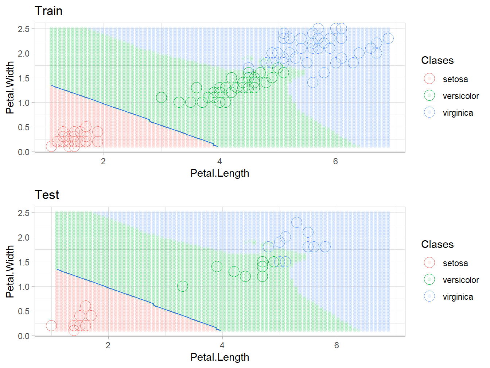

2.3 Regresión
Abordamos ahora el problema de regresión con KNN, o sea, la respuesta es cuantitativa-continua. Seguimos usando el paquete caret que tiene implementado el algoritmo y ofrece facilidades para el preprocesado de los datos y la validación del modelo.
Particularmente, atacaremos el problema de predecir el precio medio de las viviendas (medv) en los suburbios de Boston, usando otras 13 variables predictoras.
library(MASS)
library(caret)
library(ggplot2)
# cargar e inspeccionar los datos
# para detalles sobre las variables predictoras:
# ?Boston
data(Boston)
str(Boston)## 'data.frame': 506 obs. of 14 variables:
## $ crim : num 0.00632 0.02731 0.02729 0.03237 0.06905 ...
## $ zn : num 18 0 0 0 0 0 12.5 12.5 12.5 12.5 ...
## $ indus : num 2.31 7.07 7.07 2.18 2.18 2.18 7.87 7.87 7.87 7.87 ...
## $ chas : int 0 0 0 0 0 0 0 0 0 0 ...
## $ nox : num 0.538 0.469 0.469 0.458 0.458 0.458 0.524 0.524 0.524 0.524 ...
## $ rm : num 6.58 6.42 7.18 7 7.15 ...
## $ age : num 65.2 78.9 61.1 45.8 54.2 58.7 66.6 96.1 100 85.9 ...
## $ dis : num 4.09 4.97 4.97 6.06 6.06 ...
## $ rad : int 1 2 2 3 3 3 5 5 5 5 ...
## $ tax : num 296 242 242 222 222 222 311 311 311 311 ...
## $ ptratio: num 15.3 17.8 17.8 18.7 18.7 18.7 15.2 15.2 15.2 15.2 ...
## $ black : num 397 397 393 395 397 ...
## $ lstat : num 4.98 9.14 4.03 2.94 5.33 ...
## $ medv : num 24 21.6 34.7 33.4 36.2 28.7 22.9 27.1 16.5 18.9 ...## crim zn indus chas
## Min. : 0.00632 Min. : 0.00 Min. : 0.46 Min. :0.00000
## 1st Qu.: 0.08204 1st Qu.: 0.00 1st Qu.: 5.19 1st Qu.:0.00000
## Median : 0.25651 Median : 0.00 Median : 9.69 Median :0.00000
## Mean : 3.61352 Mean : 11.36 Mean :11.14 Mean :0.06917
## 3rd Qu.: 3.67708 3rd Qu.: 12.50 3rd Qu.:18.10 3rd Qu.:0.00000
## Max. :88.97620 Max. :100.00 Max. :27.74 Max. :1.00000
## nox rm age dis
## Min. :0.3850 Min. :3.561 Min. : 2.90 Min. : 1.130
## 1st Qu.:0.4490 1st Qu.:5.886 1st Qu.: 45.02 1st Qu.: 2.100
## Median :0.5380 Median :6.208 Median : 77.50 Median : 3.207
## Mean :0.5547 Mean :6.285 Mean : 68.57 Mean : 3.795
## 3rd Qu.:0.6240 3rd Qu.:6.623 3rd Qu.: 94.08 3rd Qu.: 5.188
## Max. :0.8710 Max. :8.780 Max. :100.00 Max. :12.127
## rad tax ptratio black
## Min. : 1.000 Min. :187.0 Min. :12.60 Min. : 0.32
## 1st Qu.: 4.000 1st Qu.:279.0 1st Qu.:17.40 1st Qu.:375.38
## Median : 5.000 Median :330.0 Median :19.05 Median :391.44
## Mean : 9.549 Mean :408.2 Mean :18.46 Mean :356.67
## 3rd Qu.:24.000 3rd Qu.:666.0 3rd Qu.:20.20 3rd Qu.:396.23
## Max. :24.000 Max. :711.0 Max. :22.00 Max. :396.90
## lstat medv
## Min. : 1.73 Min. : 5.00
## 1st Qu.: 6.95 1st Qu.:17.02
## Median :11.36 Median :21.20
## Mean :12.65 Mean :22.53
## 3rd Qu.:16.95 3rd Qu.:25.00
## Max. :37.97 Max. :50.00Veamos las relaciones entre predictores y la variable respuesta (en este ejemplo, solo hemos representado algunas).
# ver correlaciones y posibles relaciones:
# todos los predictores:
# ggpairs(Boston, ggplot2::aes(y = medv, alpha = 0.2)) + theme_light()
# algunos predictores:
ggpairs(Boston[, c("lstat", "age", "rad", "rm", "ptratio", "medv")]) + theme_light()
Por ejemplo, es notable la relación lineal entre medv y las variables predictoras rm y lstat. Estas dos corresponden al número medio de habitaciones por vivienda y al ínfimo estatus poblacional, respectivamente.
Ajustemos un modelo de regresión, usando todas las variables y el algoritmo KNN.
# Split the data into training and test set
set.seed(123)
train.ID <- createDataPartition(Boston$medv, p = 0.8, list = FALSE)
train.data <- Boston[train.ID, ]
test.data <- Boston[-train.ID, ]
# Fit the model on the training set
set.seed(123)
knn_reg_model <- train(
medv~.,
data = train.data,
method = "knn",
trControl = trainControl("cv", number = 10),
preProcess = c("center","scale"),
tuneLength = 20
)
knn_reg_model## k-Nearest Neighbors
##
## 407 samples
## 13 predictor
##
## Pre-processing: centered (13), scaled (13)
## Resampling: Cross-Validated (10 fold)
## Summary of sample sizes: 366, 367, 366, 366, 366, 366, ...
## Resampling results across tuning parameters:
##
## k RMSE Rsquared MAE
## 5 4.446665 0.7748420 2.877705
## 7 4.513433 0.7760351 2.931696
## 9 4.510659 0.7822810 2.961313
## 11 4.557329 0.7806128 2.997708
## 13 4.589419 0.7769459 3.031409
## 15 4.683314 0.7715242 3.108591
## 17 4.727456 0.7658943 3.133048
## 19 4.794512 0.7608152 3.190837
## 21 4.871432 0.7555146 3.242578
## 23 4.896989 0.7568145 3.256753
## 25 4.982893 0.7505900 3.318786
## 27 5.035171 0.7497412 3.356345
## 29 5.099070 0.7472969 3.412470
## 31 5.196655 0.7375974 3.477003
## 33 5.260674 0.7329066 3.507057
## 35 5.320022 0.7310458 3.543261
## 37 5.393032 0.7258230 3.592311
## 39 5.457338 0.7205076 3.643305
## 41 5.500014 0.7178285 3.669332
## 43 5.561854 0.7125909 3.713330
##
## RMSE was used to select the optimal model using the smallest value.
## The final value used for the model was k = 5.
Ahora, lo que nos interesa es disminuir el Error Cuadrático Medio:
# predicciones
predictions <- predict(knn_reg_model, test.data)
# RMSE: raíz del error cuadrático medio
RMSE(predictions, test.data$medv)## [1] 4.762122## [1] 3.050101Si representamos las predicciones y los valores reales de la variable medv, esperamos que los puntos estén muy cercanos a la recta \(Y = X\).
df_plot <- data.frame(pred = predictions, real = test.data$medv)
ggplot(df_plot, aes(x = pred, y = real)) +
geom_point() +
geom_abline(slope = 1, intercept = 0) +
xlab(expression(hat( y))) + ylab("y") +
theme_light()
¿Será posible mejorar esto? ¿Son todas las variables realmente necesarias? ¿Un grid con valores más pequeños a \(K = 5\) podría resultar mejor? Veamos qué tal es el ajuste y las predicciones si nos limitamos a unas pocas variables predictoras.
## loess r-squared variable importance
##
## Overall
## lstat 100.00
## rm 84.11
## ptratio 35.71
## indus 33.76
## crim 30.80
## tax 30.16
## black 25.33
## nox 24.24
## age 21.19
## rad 18.94
## dis 15.00
## zn 14.23
## chas 0.00# ajustamos el modelo en el nuevo diseño
train.data <- boston[train.ID, ]
test.data <- boston[-train.ID, ]
set.seed(123)
knn_reg_model <- train(
medv~.,
data = train.data,
method = "knn",
trControl = trainControl("cv", number = 10),
preProcess = c("center","scale"),
tuneGrid = expand.grid(k = 1:15)
)
# Veamos si el modelo ha mejorado algo:
# predicciones
predictions <- predict(knn_reg_model, test.data)
# RMSE: raíz del error cuadrático medio
RMSE(predictions, test.data$medv)## [1] 4.33752## [1] 2.805195df_plot <- data.frame(pred = predictions, real = test.data$medv)
ggplot(df_plot, aes(x = pred, y = real)) +
geom_point() +
geom_abline(slope = 1, intercept = 0) +
xlab(expression(hat( y))) + ylab("y") +
theme_light()